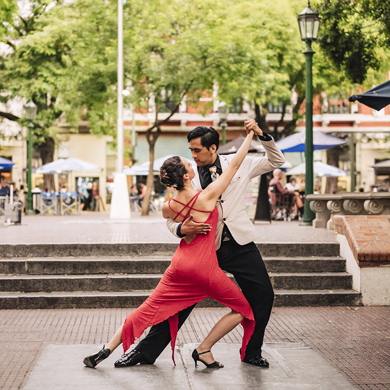

La culture
Le tango
Le tango est une danse qui vient de Buenos Aires. On peut en voir dans la rue le soir.

Le football
Les Argentins adorent le foot. Messi et Maradona sont très connus là-bas.
Le tango est une danse qui vient de Buenos Aires. On peut en voir dans la rue le soir.

Les Argentins adorent le foot. Messi et Maradona sont très connus là-bas.